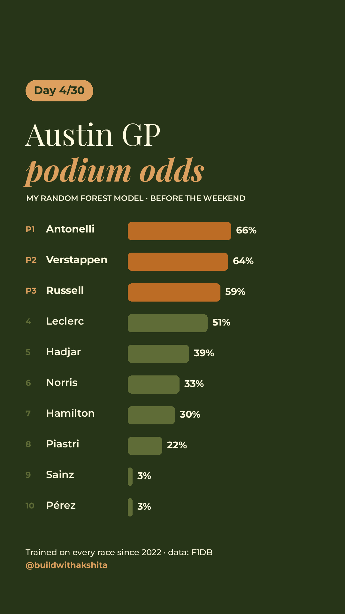

My Austin prediction
Random forest · every F1 race since 2021
Open it in Google Colab and press Run all. It downloads the data, tests the model on every 2026 race, and draws the Austin prediction. During race weekend it also pulls practice and qualifying times.

- P1Kimi Antonelli66%
- P2Max Verstappen64%
- P3George Russell59%
Chance of a podium, predicted before the weekend. It can't see safety cars, rain or Ferrari strategy.
Six steps, no magic
The same steps as almost every ML project
- Get the dataEvery F1 race result since 2021 from F1DB, a free database on GitHub.
- Clean itCrashes, retirements and disqualifications don't count toward form. A DNF says nothing about pace (sorry, Ferrari 2023).
- Build 4 featuresRecent finishes · recent points · car strength (team points per race) · track history at this Grand Prix.
- Don't trust one raceIf a driver has only raced here once, like Kimi in Austin, their track history is blended with current form.
- Train a random forestHundreds of decision trees vote on one question: podium, yes or no?
- Test it honestlyPredict every 2026 race using only data from before that race. Then predict Austin.
Where the F1 data comes from
Two open-source projects
F1DB has every result back to 1950 as simple CSV files. FastF1 gives you live timing, lap times and telemetry, and updates within hours of each session.
- Free
- Python friendly
- Updated every race
Random forests, explained
From "what's a decision tree" to training one
A random forest is a crowd of decision trees, each trained on a slightly different slice of the data. They vote, and the crowd is usually smarter than any one tree.
- ~2 hours total
- Free
- Decision treesA flowchart of yes/no questions the model learns from data
- BaggingTrain many trees on random samples, then let them vote
- Feature importanceSee which inputs the forest relied on most (for me: recent points and car strength)
- Watch outWith rare outcomes like podiums, plain accuracy lies. Saying “no” to everyone is 86% accurate